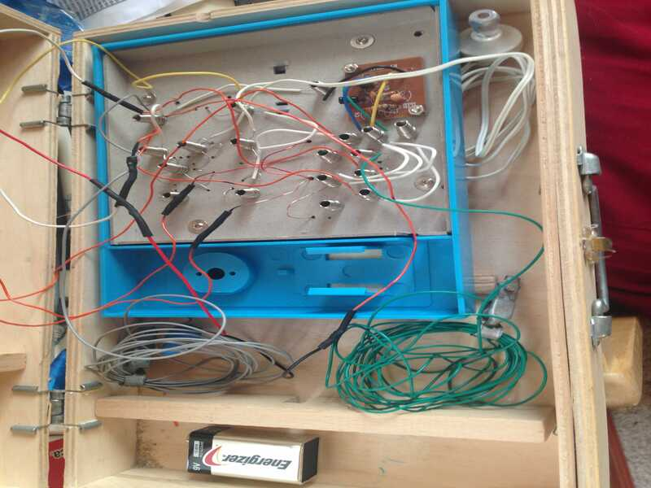

The Maxitronix Shortwave Radio Kit is a simple receiver for two bands, 6-8 MHz and 12-18MHz. The kit comes with various wires that you use to connect the components on the cardboard board. Each wire can be connected via springs on the board. It is powered by a 9V battery, clip included, and uses a ceramic piezo buzzer as an earphone. Part of the circuit was pre-assembled on a pcb. Beyond that, there is very little. The directions are cut and clear, but everything about the kit retains an intentional minimalism.
The springs do not grip the wires well and often cause more problems, than they are really worth, but I did not feel like soldering all of the connections, so I left them as intended.
I have made a number of improvements. First and foremost is the placement of the kit into an old wooden toolbox,
utilizing a toolholder to hold the battery. One unintended problem of the box is that the lid can close on the
internal wires and damage them, but if they are carefully shortened and also observed when closing, they
are more likely to be safe.
I also added a power switch (far left) and a switch between
the two bands (right). Between them I replaced the plastic tuning wheel with a soft slab of balsa wood. In
retrospect, I should have used a harder, more durable wood, because the center hole wore out and became
loose once. The band switch and wheel are simply attached with hot glue, and the power switch came with
adjustable nuts. I used a dremel to drill and cut the spaces, and I attached the center hole of the wheel to
the dremel to spin it, while I carefully sanded it into a perfect circle.
I lost the included battery clip and substituted the cheapest, that I could find available. The low cost is
ideal for a project like this, but the longevity is dubious, and it is difficult to attach and separate the clip
from the battery.
The old tool holder was conveniently placed close enough to the plastic box of the receiver, that
the battery cannot slide out of its position.
I have also added leads for the antenna and Earth-ground with clips to attach them various accoutrements.
<-- Ground Lead
<-- Antenna Lead